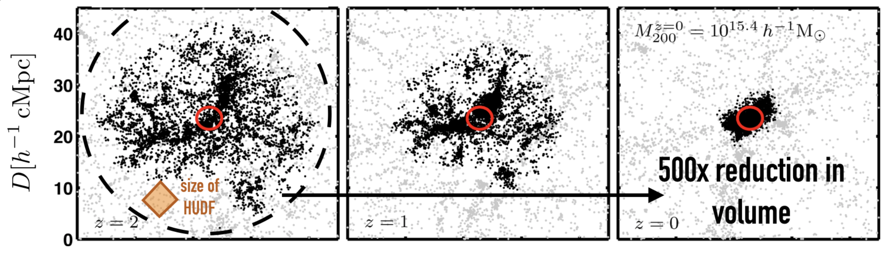

Join the team!
Casey High-redshift Extragalactic Group
The University of Texas at Austin
Now Hiring for Fall 2022
Prospective Postdoctoral scholars are invited to submit applications to join the Casey research group at UT Austin for Fall 2022 (start dates are flexible on request). Successful applicants may work on a variety of different projects and datasets related to high-redshift galaxy formation and evolution. These include data from the upcoming JWST Cycle 1 COSMOS-Web Treasury Program, the ALMA 2mm MORA Program, searching for high-redshift galaxy cluster progenitors in HETDEX data, and an ambitious project aimed at building a legacy spectroscopic database for the COSMOS field. More lengthy descriptions of each project are given below.
Link to application: HERE
Letter of Recommendation Submission Form:HERE

The COSMOS-Web Survey
COSMOS-Web is the largest Cycle 1 JWST program (218 hours; PIs are
Casey and Kartaltepe). We will map a contiguous 0.6deg2 to
a depth of 27.5-28 [AB] in NIRCam with an additional
0.2deg2 mapped with MIRI in parallel mode observations.
The primary science goals of COSMOS-Web are to:
(1) dramatically increase the number of galaxies known in the Epoch of
Reionization and map their environments, allowing the first direct
constraints on reionization's patchiness and which galaxies drive the
process.
(2) discover hundreds of quiescent galaxies formed in the
Universe's first 2 Gyr, placing fundamental constraints on the growth
of the Universe's most massive galaxies
(3) directly constrain the
stellar mass to halo mass relation (SMHR) out to z~2.5 using weak
lensing, setting a new and crucial calibration of cosmological
models.
COSMOS-Web will also do much more. As a treasury program that will
give us incredibly deep, high-resolution imaging of 106
galaxies, the legacy value of COSMOS-Web will be extraordinary, from
the study of metal-poor halo stars in our own Milky Way to galaxies at
z=11.
Postdocs who will join the Casey group at UT can expect to be heavily involved in the COSMOS-Web program. The observational efforts to identify EoR galaxies will be led at UT Austin, with substantial work on massive galaxies at all epochs. Postdocs in the group may develop key responsibilities for the delivery of COSMOS-Web products to the broader community. There will also be ample opportunity use these data, as well as data from the broader COSMOS collaboration, to pursue other projects of interest.
The COSMOS Spectroscopy Project (CSP)
The 2deg2 COSMOS field has accumulated a tremendous amount of legacy value in the extragalactic community. As one of the leaders of the COSMOS team, I see COSMOS as having a unique legacy for the democratization of science by building cutting-edge products that are broadly available to all astronomers worldwide. This philosophy has been central to the COSMOS team over its 15+ year history, and its a reason that so many have been able to build their careers from the diverse datasets in the field. And over the years, more people have brought more data with them.
While ~200,000 galaxies have been spectroscopically observed in the field as a part of this community-driven effort, the spectra themselves have not been broadly organized or synthesized into one database. These spectra come from facilities like the VLT, Keck, Gemini, and Subaru.
This project aims at collating these data from different facilities to build an ambitious, new, spectroscopic database for COSMOS. With it, we will be in a unique position to explore the Universe in three dimensions and uniquely search for and characterize overdense structures from 0<z<4, uniquely constrain environment-dependent galaxy characteristics, improve measurements of the dark energy equation of state, and use galaxies' spectra to construct IGM tomographic maps. Postdocs working on this project may have keen interest in data structures and OIR spectroscopy.
Observing the Formation of Massive Galaxy Clusters
In a joint project between the Casey and Finkelstein groups at UT,
we are assembling a dataset of 60,000 1.9
Such a dataset is uniquely useful for constraining the Universe's protocluster population -- or the progenitors of massive galaxy clusters. Without galaxy pre-selection, VIRUS will take census of the Universe's large scale overdensities and underdensities, allowing direct identification of thousands of protoclusters, and the first large statistical samples of such structures. By directly comparing newly identified structures to quasars (also identified by VIRUS) and dusty starbursts (identified in Herschel data), we can begin to constrain the stochasticity of protocluster growth, observationally addressing the fundamental mechanism by which galaxy clusters -- the Universe's largest gravitationally bound structures -- are formed.
Postdocs interested in this project can expect to analyze pre-processed VIRUS data (reduced using the HETDEX pipeline), help identify quasars in these datasets, as well as perform cross correlations with Herschel and VLA datasets over 10deg2 scales, with potential for significant contributions to protocluster studies.
Mapping Obscuration to Reionization with ALMA (MORA)
The MORA Survey began in ALMA Cycle 6 with 15 hours of band 4 time awarded to map 184arcmin2 area in 2mm continuum; the goals of MORA are to directly constrain the volume density of Dusty Star-Forming Galaxies (DSFGs) to cosmic star formation at z>4, which has been notoriously difficult to constrain over the 20+ years we have known about this population of extreme starbursting galaxies. This early epoch is particularly important for DSFG formation because of their uniquely high mass (similar or higher than host galaxies of high-z quasars) and their enormous reservoirs of dust (Mdust~109Msun), established in an era where dust formation mechanisms are poorly understood.
Several MORA papers have been published from this first round of data (Zavala et al. 2021, Casey et al. 2021, and soon-to-come Manning et al. 2021), suggesting the number density of DSFGs at z>4 is rather low. However, we do find that 2mm is uniquely efficient at recovering the z>4 DSFG population, espeically compared to shorter wavelength surveys.
Due to its efficiency at identifying unique, z>4 DSFGs, the MORA program earned a 36 hour extension in ALMA Cycle 8 to quadruple the survey area to cover a total of 0.2deg2. This 0.2deg2 will be embedded within the footprint of COSMOS-Web, allowing unique and immediate characterization of near-infrared stellar emission in these extreme, dusty systems. Similarly, MORA will provide crucial constraints on ISM content of new discoveries in COSMOS-Web through stacking analysis, as individual source follow-up of JWST discoveries with ALMA will be prohibitive for large samples.
Postdocs interested in MORA will be able to get involved in the Cycle 8 data analysis (expected to complete by mid-2022) and related papers, particularly as they relate to synergies with the COSMOS-Web data (ready by mid-2023).